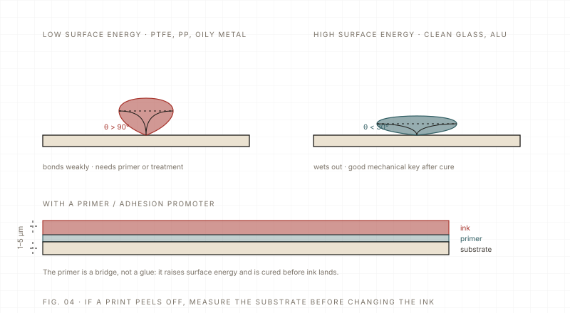

Materials Intermediate 6 min read Updated 2026-11
Adhesion and surface energy: the dyne number decides
UV ink sticks when it wets the surface. If the substrate's surface energy is below the ink's surface tension, the ink beads up and peels, no matter how much UV energy you give it. Clean, then treat, then test.
The short answer: adhesion is a wetting problem before it is a chemistry problem. A liquid spreads on a solid only when the solid's surface energy is higher than the liquid's surface tension. UV inks sit somewhere around the mid-30s in dyn/cm (mN/m); most plastics that print well are at or above about 38. Below that, the ink beads, and a bead that survives the lamp will eventually peel.
| Substrate | Typical surface energy | Usual treatment |
|---|---|---|
| PP / PE | Around 30–32 mN/m | Flame, corona or plasma; primer as backup |
| ABS / PC | Around 38–42 mN/m | IPA wipe; primer on some grades |
| PMMA (acrylic) | Around 38–42 mN/m | IPA wipe, light primer for edge durability |
| Glass | High, often above 60 mN/m | Degrease and dry; condensation is the real enemy |
| Stainless / aluminium | High, but often contaminated | Degrease, remove oxide/oil; primer for bends |
| Powder-coated metal | Variable | Test the coating; IPA wipe, primer if needed |
| Untreated PET | Around 40 mN/m | Often printable; check with a dyne pen |

Clean first — most 'treatment' is really cleaning
Mould release agent, finger oil, dust and condensation are the most common causes of peeling, and none of them need a plasma unit to fix. Wipe with IPA and a clean, lint-free cloth, change the cloth often, and let the solvent flash off completely before printing. Never use a rag that has touched silicone or machine oil. On glass, print after the part has reached room temperature, not straight from a cold truck.
When cleaning is not enough
- Primer: a thin, even coat that is fully dried; too thick a primer becomes the weak layer.
- Flame treatment: fast and cheap for PP/PE parts; keep the distance and speed constant or the effect varies across the part.
- Corona: good for film and sheet; the effect fades with time, so print soon after treatment.
- Plasma: the most uniform for small, complex or heat-sensitive parts, but needs the right gas and gap.
Finally, test adhesion the way the product will be used: cross-hatch plus tape after 24 hours, a rub with IPA, a bend on flexible parts, or a short water soak for drinkware. A print that passes on the bench and fails in the customer's hand is worse than a print you rejected at the bench.
One point that is easy to miss: a substrate is at its best right after the protective film comes off. Left overnight, it picks up airborne oil and moisture and adhesion drops. We try to print the same day it is cleaned and re-wipe anything that has sat around.